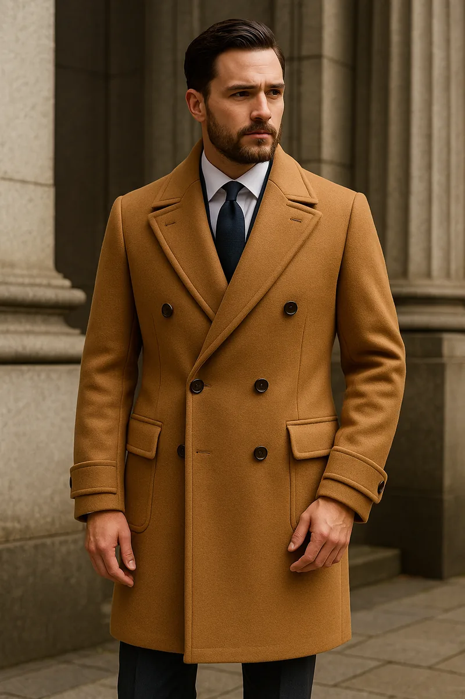
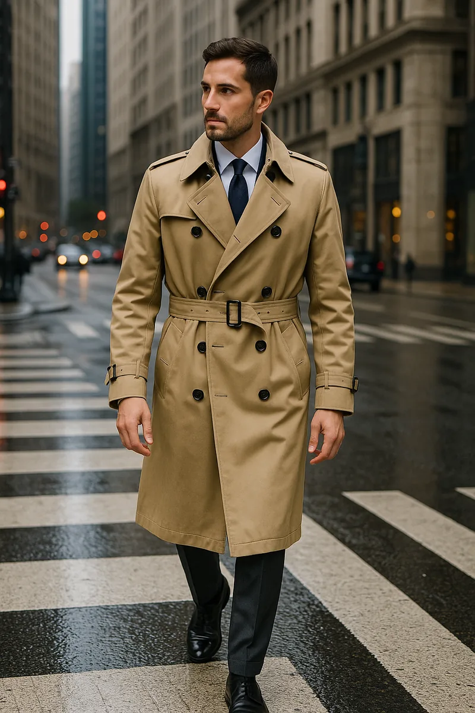
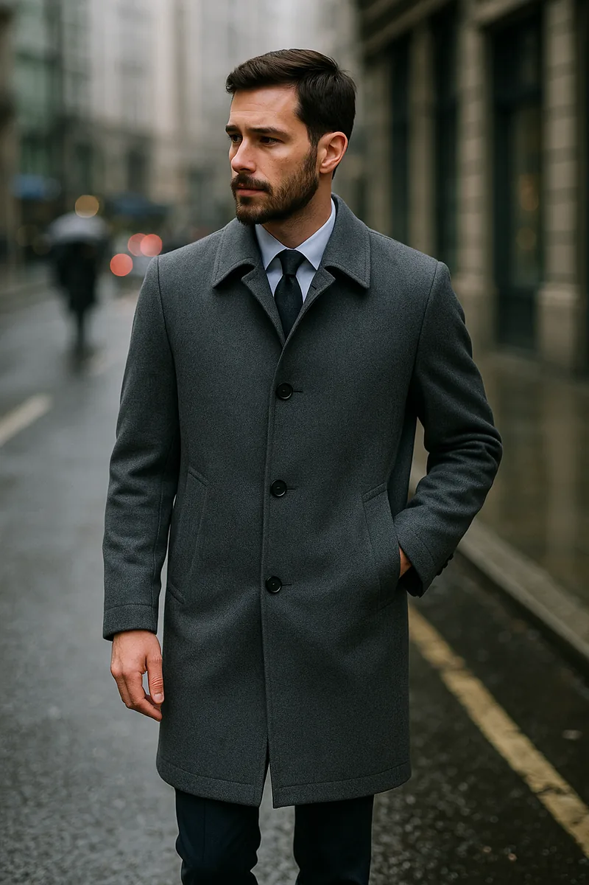
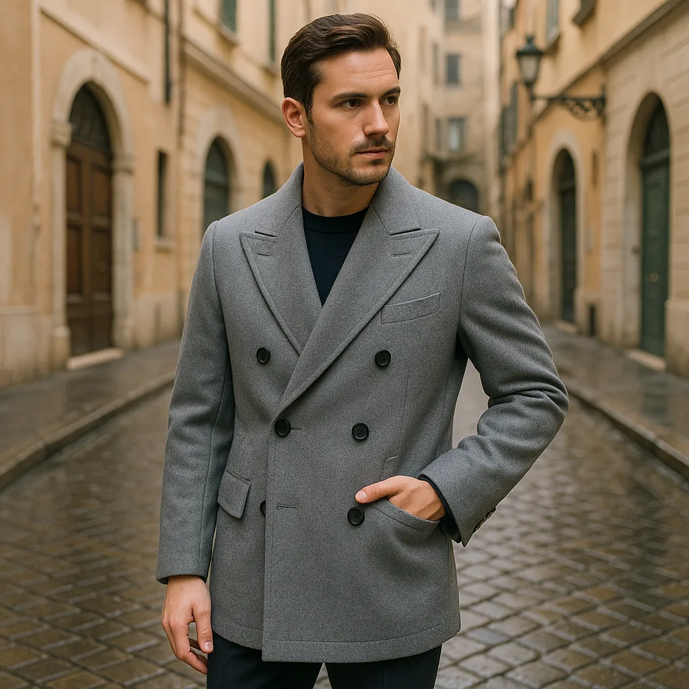

オーダーコートの7つの魅力
「コートはどれも同じ」と思っていませんか。実は、オーダーコートと既製コートの差は、スーツ以上に顕著に現れます。体型への適合度が全体のシルエットを左右するからです。
- ① サイズ感のフィット — 肩幅・袖丈・着丈を体型に合わせて微調整。ジャストサイズの仕立ては、軽く羽織れるような着心地で、長時間着てもストレスを感じにくい。
- ② 素材選びの自由さ — ウール・カシミヤ・アルパカなど多彩な選択肢から、耐久性を取るか上質感を取るかを自分で判断できる。世界の一流生地ブランドを選べば、品質もステータスも手に入る。
- ③ デザインの幅広さ — チェスター・アルスター・ポロ・トレンチなど代表的な型から選び、ラペル幅・ボタン位置・ポケットまでカスタム可能。通好みの仕様を盛り込めるのはオーダーならでは。
- ④ 自分だけの一着 — 「自分のために作られた」という満足感と愛着。着るたびに「これが自分のコートだ」という特別感を味わえる。
- ⑤ 長期的な価値 — 厚手の生地と丁寧な縫製で数年単位で長持ち。体型が変わっても再調整できるから、結果的にコスパが高く、資産的価値を持つ一着になる。
- ⑥ 品格と存在感 — 冬の第一印象は、ほぼコートで決まる。「良いものを知っている人」という信頼感を演出し、経営者やリーダー層にとっては不可欠な"鎧"のような存在。
- ⑦ 季節・シーンへの対応力 — 真冬の重厚な一着から春秋の軽やかな一着まで。ビジネス・カジュアル・フォーマルを問わず、バイク乗りから結婚式まで対応できる。
オーダーコートは防寒具を超えて、「冬の装いを格上げする相棒」です。体型に沿ったサイズ感、ライフスタイルに合わせた素材選び、自分だけのデザインとこだわり——これらをすべて反映できるのがオーダーの強み。経営者やワンランク上を目指すビジネスマン、そして「長く良い物を大切に着たい方」にこそふさわしい冬のパートナーです。
そして、最低でも2着をローテーションで揃えれば、生地への負担が減り長く美しく保てます。「長く愛せる一着を持ちたい」——そう思った瞬間が、オーダーコートを仕立てる最高のタイミングです。
よくある不安と解決法
オーダーコートを検討する際、多くの方から「重くなりませんか」「どんな素材を選べばいいか分からない」というご相談をよくいただきます。
重さについて
生地の重さは「目付（めつけ）」というグラム数で表されます。軽さを重視するなら目付400g前後、暖かさを優先するなら500g以上が目安です。ベイビーアルパカやカシミヤ混紡では、400g未満でも十分な保温性を得られます。
なお、近年はベイビーアルパカやカシミヤといった高級素材の価格が急騰しており、今後も値上がりが予想されます。検討されている方は、できる限り早めに仕立てることをおすすめします。
| 素材 | 特徴 | おすすめシーン |
|---|---|---|
| ウール | 耐久性が高く扱いやすい。価格も安定 | 毎日のビジネス使いに |
| カシミヤ | 軽くて保温性が優れている。上品な光沢 | 格式あるシーンに |
| ベイビーアルパカ | ふっくらとした質感。チクチク感がなく柔らか | 快適さを求める方に |
| ローデンクロス | 縮絨加工で防風・防水性が高い | 天候を問わない実用性に |
色 ― シーンに合わせた正解を選ぶ
色はオーダーコートで失敗しやすいポイントの一つ。シーンに合わせて選べば、間違いありません。
- ネイビー・グレー — ビジネスシーンに万能。信頼感と汎用性の高さが魅力です。
- ブラック — フォーマル度が高く、冠婚葬祭にも安心。ただし日常ではやや堅い印象になりやすい。
- ブラウン・ベージュ — 柔らかさや洒落感を演出。休日スタイルにもおすすめです。
Point
「重さ」「素材」「色」——この3つが失敗しやすいポイント。ここさえ押さえれば安心です。
最初の一着は「ネイビー」または「グレー」を選び、二着目以降でベージュやブラウンに挑戦するのが理想的です。また、コート自体はベーシックカラーを選び、マフラーやニットでアクセントを加えると、冬の装いに華やかさが出ます。
デザイン図鑑 — 7種のコート
コートのデザインは、着る人の個性とTPOを映す鏡です。それぞれの特徴を理解した上で、自分のスタイルに合ったものを選んでください。
「チェスターコート」の名でも知られる、19世紀英国生まれの"紳士の王道"。ノッチドラペル（刻み衿）とシングル仕立てが基本の、クラシックなフォルムです。
"紳士の王道。シンプルゆえに、仕立ての良し悪しが直に出る"玄人泣かせ"の一着。"

大きめのアルスターカラーとダブル仕立てが特徴。重厚感とクラシックさを備え、経営者やリーダー層に好まれる、ボリューム感のあるデザインです。
"重厚感とクラシックさを備えた、経営者やリーダー層にふさわしい"威風堂々"の一着。"
ダブルブレスト、ターンナップカフス（折り返し袖）、フレームドパッチポケット。さらにインバーテッドプリーツと背ベルトで、立体感と機動性を両立。ポロ競技選手の装いに由来する、スポーティかつクラシックな一着です。
"スポーティかつクラシック。立体感と機動性を両立した、洒落者が選ぶ"通の名品"。"

第一次世界大戦の塹壕（Trench）で英国軍が着用したのが起源。エポーレット（肩章）、ガンフラップ、ウエストベルト、背中のストームシールドといった軍用ディテールが機能美として結実。防水性に優れたギャバジン素材で仕立てられることが多く、雨風に強いのも魅力です。
"百年変わらない普遍性が、トレンチを永遠の定番にしている。"

小ぶりな衿が特徴のシンプルな定番。日本では「ステンカラー」と呼ばれ、薄手で作られることが多い一着です。雨の日や季節の変わり目の強い味方になります。
"雨の日も季節の変わり目も頼れる、仕立てのラインで品格が分かれる一着。"
肩の切り替えがなく、衿元からそのまま袖が続く構造。肩が自然に落ちるシルエットで動きやすく、リラックス感があります。カジュアルシーンに映える一着です。
"シルエットの柔らかさが、着る人の雰囲気を和らげる。動きやすさとリラックス感を併せ持ち、カジュアルシーンに映える"隠れた名作"。"

イタリアで愛されるショート丈コート。"ジャケット＋コート"でジャッコーネ。軽快な着丈とダブル仕様で動きやすく、ジャケパンやイタリアンカジュアルに絶妙にマッチします。
"ジャケット＋コートでジャッコーネ。分かっている人が選ぶ"、新提案の一着。
Point
この7つの代表モデルを知っておけば、自分に合う一着がきっと見つかります。まずは「どんなシーンで着たいか」から選んでみてください。
オーダーの流れとスケジュール
FIEROでのオーダーコートは以下のステップで進みます。初めての方も安心してお任せください。
カウンセリング
まず「どのシーンで着るのか」「どんなふうに見せたいのか」を必ずお伺いします。なりたい姿から逆算して、一着の方向性を定めていきます。
採寸
体型の癖や姿勢の特徴も見ながら各部を採寸し、あなた専用のパターンを作成します。
生地合わせ
実際の生地見本を手に取りながら、生地・色・デザイン・裏地・ボタンなどを決定します。
仮縫い（オプション）
本縫い前に、仮の状態で組んだ一着でシルエットを確認します。ご希望の方のみのオプション（追加料金）です。
フィッティング
仮縫いの一着を実際に着ていただき、フィット感を細かく調整します。
本縫い
調整の内容を反映して本仕立てに入ります。縫製期間は約1〜2ヶ月。進捗は随時ご連絡します。
最終フィッティング（引き渡し）
仕上がりを最終確認し、必要であればその場で微調整してお渡しします。
納期の目安は平均2ヶ月前後です。真冬（12月〜2月）に着用したい場合は、9〜10月にオーダーを開始するのが安心です。生地によっては取り寄せに時間がかかることもあるため、余裕を持ったご相談をお勧めします。
Point
平均納期は約1〜2ヶ月。真冬に着たいなら、秋（9〜10月）から動くのが正解です。
まとめ
Conclusion
オーダーコートは「防寒具」を超えた、冬の装いの軸です。正しいサイズ感・素材・デザインの三つが揃ったとき、コートはあなたの存在感を静かに、しかし確実に底上げします。
最低2着をローテーションすることで生地への負担が減り、長く愛用できます。まずは一着、「これだ」と思えるコートを仕立てることから始めてみてください。
FIEROでは初回相談を無料で承っています。どんな些細な疑問でも、LINEからお気軽にどうぞ。
Point
「軽さ・素材・色」で選び、最低2着をローテーションして長く愛用する。これがオーダーコートを楽しむ一番のコツです。